業務管理計画書 - メイン画面
日次の現場配置を管理するメイン画面。ナビバー・ツールバー・グリッド・左右サイドパネルで構成されます。
メイン画面の全体構成
選択日の受注行に対し、社員・車両・送迎をドラッグ&ドロップで配置します。
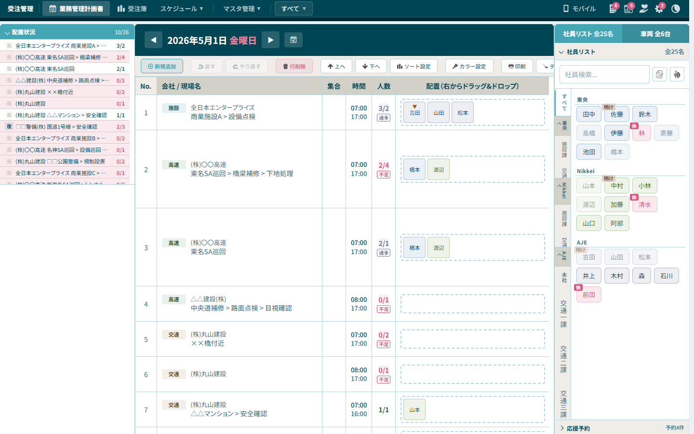
- ナビバー: 画面切替（受注管理／業務管理計画書／受注簿／スケジュール▼／マスタ管理▼）、グループ会社フィルタ（すべて▼）、モバイル、右端に変更通知ベル4個・ダークモード切替
- 日付ナビ: 前日/翌日（◀▶）、日付表示、カレンダーピッカー
- ツールバー: 新規追加 / 戻す（Undo）/ やり直す（Redo）/ 行削除 / 上へ・下へ（行移動）/ ソート設定 / カラー設定 / 印刷 / データリセット
- グリッド列: No.／会社・現場名／集合／時間／人数／配置（D&D）／作業内容／地図／車両／備考。各セルをクリックすると対応するモーダルが開きます
- 左サイドパネル（配置状況）: 各行の配置充足状況（配置数/必要数）を一覧。クリックで該当行へスクロール
- 右サイドパネル: 「社員リスト」「車両」の2タブ。検索ボックス、編集ボタン、バッジ色ボタン。社員・車両タグをグリッドへドラッグして配置。配置済みは色付き表示
- 固定行: 「会社」「休み（申請なし）」「休み（申請あり）」の3固定行。休み行は休暇申請管理（LA）の承認済み休暇から導出表示
新規追加モーダル
受注行を新規作成
ツールバーの「新規追加」ボタンで開きます。受注情報を一括入力して行を追加します。
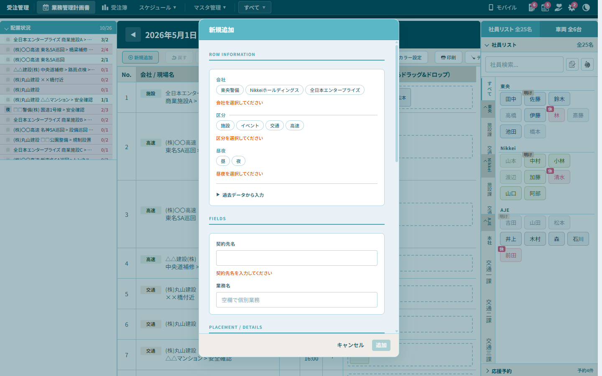
- ROW INFORMATION: 会社・区分・昼夜をチップで選択
- 過去データから入力: アコーディオンを開き、契約先・業務名の過去実績から復元
- FIELDS: 契約先名（サジェスト付き）、業務名（空欄なら個別業務）
- PLACEMENT / DETAILS: 人数、信頼度（確定／予定（高）／予定（低））、業務詳細（キー・バリュー追加）
- 作業内容: 区分に応じた作業内容バッジを追加・管理
- SCHEDULE / NOTES: 集合時間・集合場所、開始/終了時間、現場監督・連絡先、地図、備考
- フッター: キャンセル／追加
現場詳細入力モーダル
現場情報の編集
グリッドの「会社・現場名」セルをクリックすると開きます。新規追加モーダルと同じ構成の編集モードです。
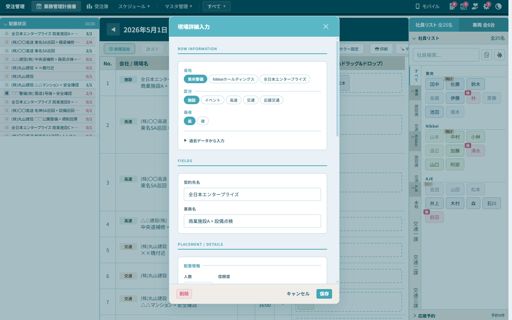
- 会社・区分・昼夜: チップで選択。区分はカスタム追加も可能
- 契約先・業務名: コンボボックスで入力・選択
- 業務詳細: 工事名等をキー・バリューで動的追加
- 人数・信頼度・作業内容: 受注の基本属性を編集
- フッター: 削除（行全体を削除）／キャンセル／保存
集合情報モーダル
集合時間・連絡方法・集合場所
グリッドの「集合」セルをクリックすると開きます。
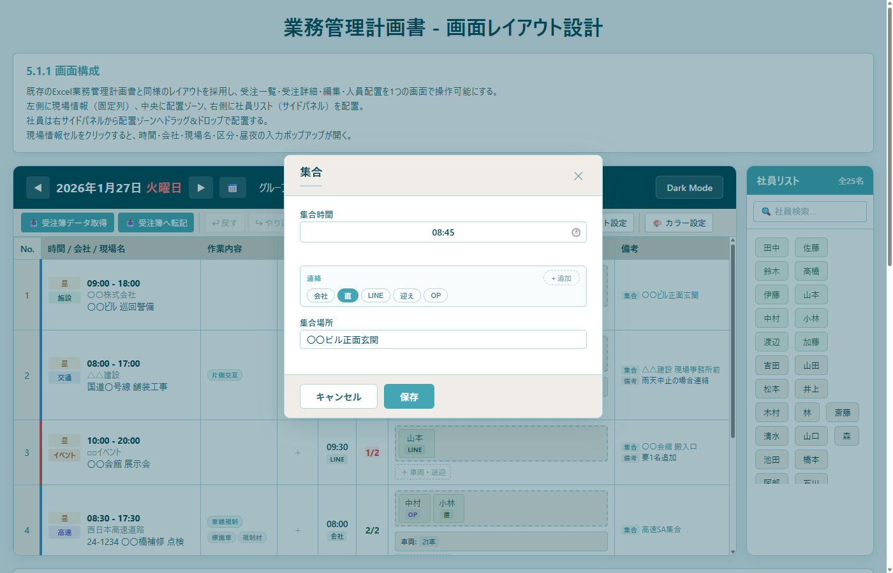
- 集合時間: カスタム時間ピッカーで設定
- 連絡: チップで連絡方法を選択（会社／直／LINE／迎え／OP 等）。カスタム追加可
- 集合場所: テキスト入力
時間モーダル
開始/終了時間の設定
グリッドの「時間」セルをクリックすると開きます。
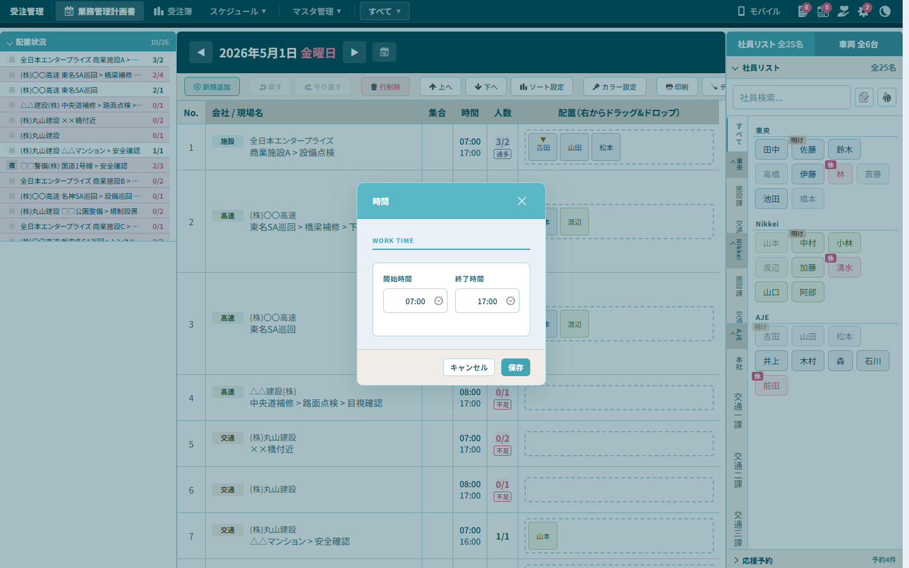
- 開始時間 / 終了時間: それぞれカスタム時間ピッカーで設定
作業内容モーダル
区分に応じた作業内容の設定
グリッドの「作業内容」セルをクリックすると開きます。
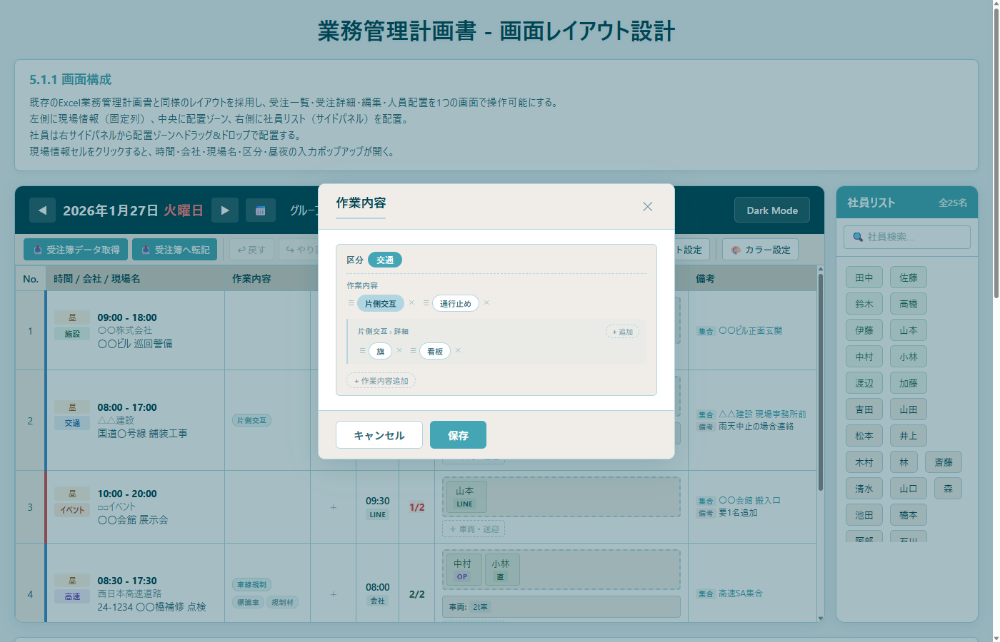
- 区分表示: 現在の区分（交通・高速など）を表示
- 作業内容バッジ: チップで管理。ドラッグで並べ替え、×で削除、削除直後は「戻す」で復元
- 詳細（孫バッジ）: 作業内容の下にさらに詳細項目を追加（例: 片側交互 > 旗・看板）
- + 作業内容追加: 新しい作業を追加
送迎・備考モーダル
送迎・集合場所・備考をまとめて管理
グリッドの「車両」または「備考」セルをクリックすると開きます。旧「車両・送迎」「備考」モーダルを統合したものです。
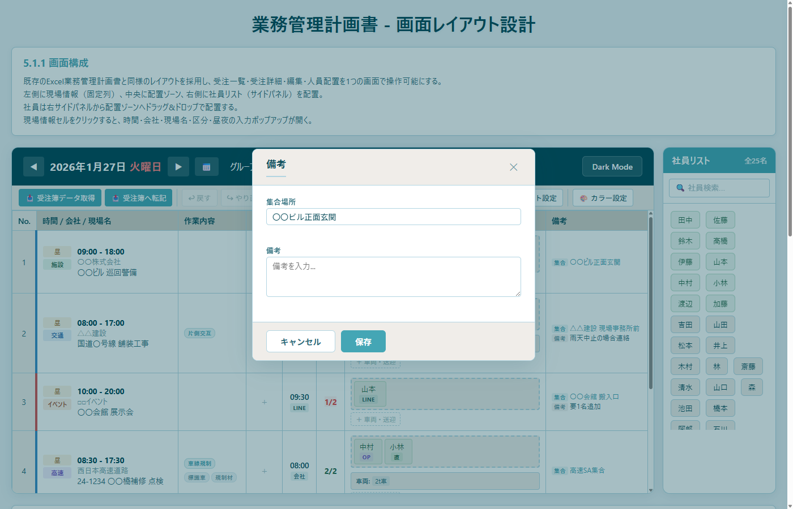
- プリセットから追加: 「+ 送迎」「+ 集合場所」「+ 備考」で定型項目をワンクリック追加
- 項目編集: 各項目に項目名・内容のテキスト入力、背景色・文字色のカラー設定
- 並べ替え: ドラッグで項目の順序変更
- + 項目を追加: カスタム項目を自由追加
地図URL設定モーダル
Google Maps URLの設定とプレビュー
グリッドの「地図」セル（＋）をクリックすると開きます。複数の地図をタブで管理できます。
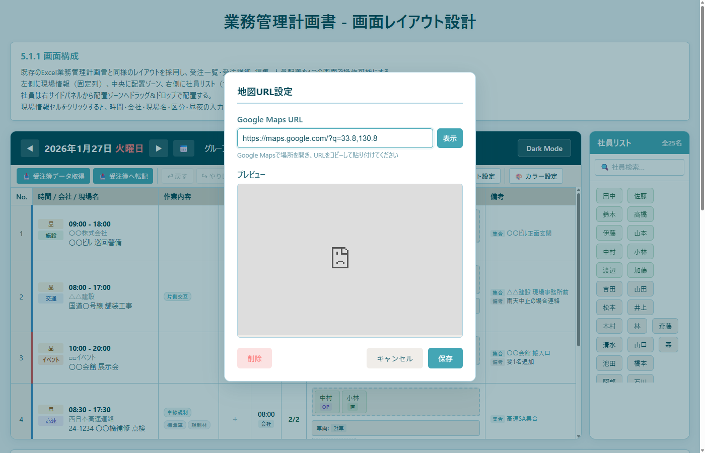
- タブバー: 複数地図をタブで切替・追加
- タイトル / URL: 地図の名称とGoogle Maps URLを入力
- 表示: 入力URLをiframeでプレビュー
- このタブを削除: 現在の地図タブを削除
社員リスト編集モーダル
社員の表示/非表示・並び順
右サイドパネル「社員リスト」タブの編集ボタンで開きます。
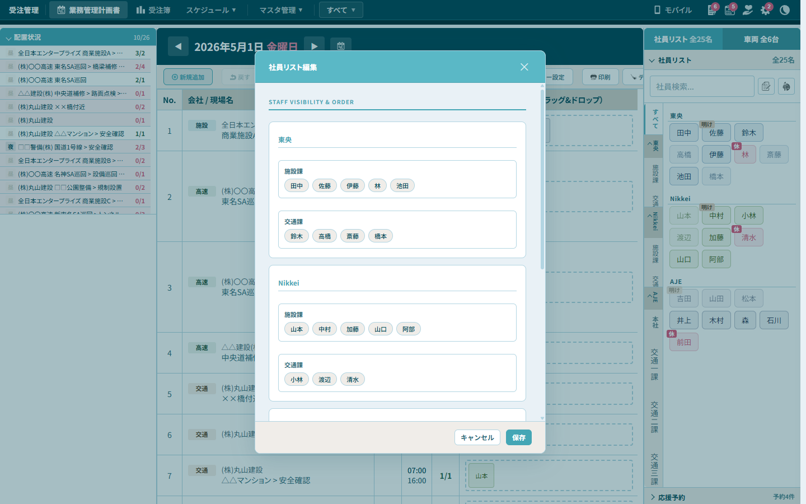
- STAFF VISIBILITY & ORDER: 会社別・課別に社員チップを表示
- 表示/非表示・並べ替え: 各社員チップの表示切替とドラッグでの順序変更
- フッター: キャンセル／保存
車両リスト編集モーダル
車両・ETCの表示/非表示・並び順
右サイドパネル「車両」タブの編集ボタンで開きます。
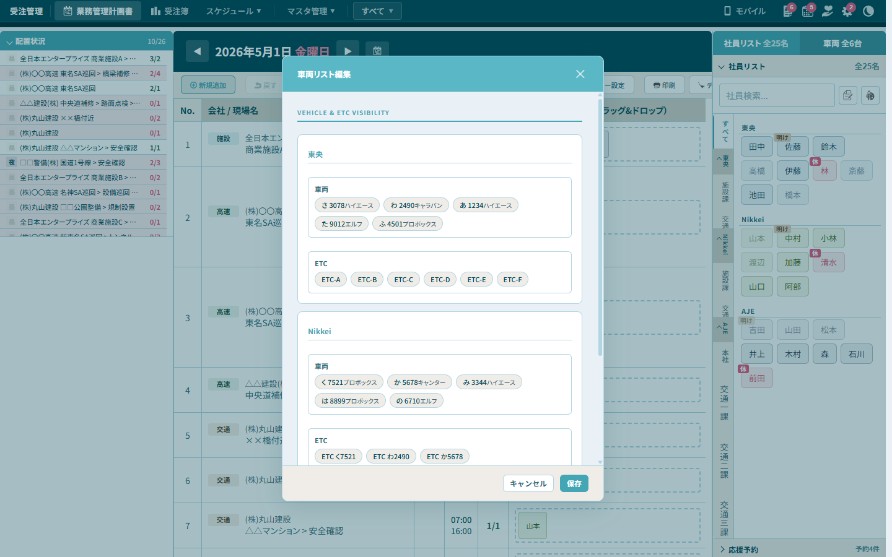
- VEHICLE & ETC VISIBILITY: 会社別に車両・ETCカードのチップを表示
- 表示/非表示・並べ替え: 各チップの表示切替とドラッグでの順序変更
- フッター: キャンセル／保存
ソート設定モーダル
グリッド行の並び順設定
ツールバーの「ソート設定」ボタンで開きます。
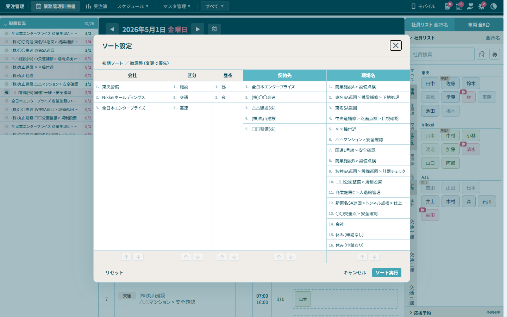
- 多段ソート: 会社 → 区分 → 昼夜 → 契約先 → 現場名 の階層でソート
- 並べ替え: 各項目内の値をドラッグ／▲▼で並び替え。手動変更すると「優先適用中」バッジが付く
- 連動絞り込み: 契約先は区分選択で、現場名は契約先選択で絞り込み
- フッター: リセット／キャンセル／ソート実行
カラー設定パネル
画面のカラーテーマをカスタマイズ
ツールバーの「カラー設定」ボタンで右側にスライドイン表示されます。
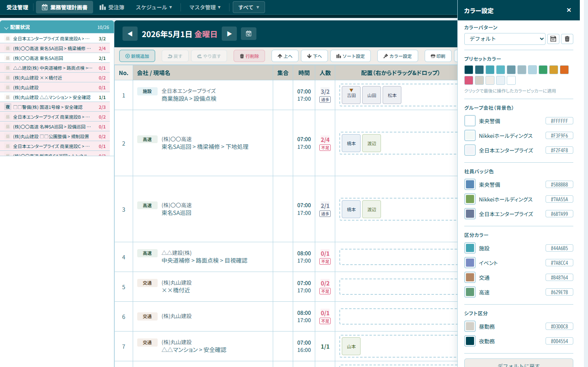
- カラーパターン: プリセットの保存・読み込み・削除（最大5パターン）
- プリセットカラー: よく使う色をスウォッチから選択
- グループ会社背景色: 東央警備／Nikkei／全日本の背景色を設定
- 社員バッジ色・区分カラー・シフト区分: ベース色から背景・文字色を自動生成して設定
- デフォルトに戻す: 全色をリセット
印刷プレビュー
業務管理計画書の印刷・PDF出力
ツールバーの「印刷」ボタンで開きます。
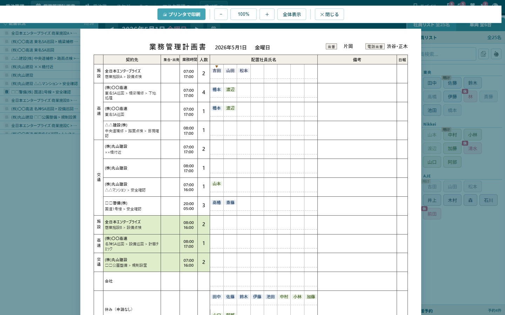
- プレビュー: 印刷書式（業務管理計画書）でレイアウトを表示
- ツールバー: PDF出力／印刷、倍率調整、グループ会社別（東央警備／Nikkei）の書式切替
受注簿 - メイン画面
月単位で全受注データを一覧管理するメイン画面。契約先ごとの行 × 日付の列でマトリクス表示します。
月間の受注データグリッド
受注情報の業務上の起点となる画面です（Quick Accessと並ぶ入力起点）。
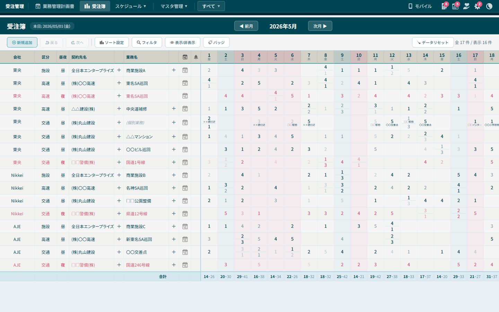
- ヘッダー: 本日日付、月選択（前月/次月）、ダークモード切替、変更通知ベル
- ツールバー: 新規追加 / 戻る・次へ（Undo/Redo）/ ソート設定 / フィルタ / 表示・非表示 / バッジ表示切替 / データリセット。右端に件数表示（全N件／表示M件）
- 固定列: 会社／区分／昼夜／契約先名／（複製＋）／業務名／（昼夜反対＋）／カレンダーボタン
- 日付列: 1日〜月末。各日付セルに人数を表示。当日列はハイライト
- セルの色分け: 信頼度・人数に応じた色分け。作業内容バッジはツールチップで確認
- 行合計列: 右端に「確定最小〜最大」形式で表示。最下部に日ごとの合計行
フィルタバー
表示データの絞り込み
ツールバーの「フィルタ」ボタンでトグル表示されます。
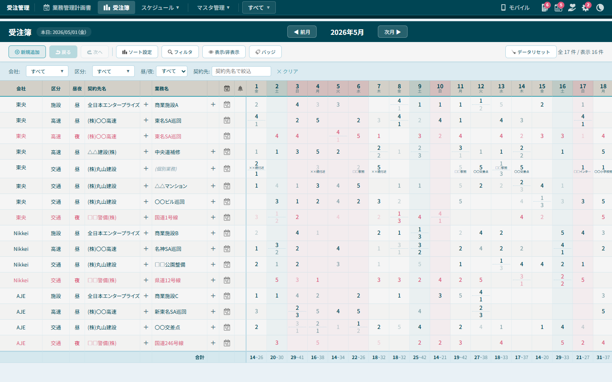
- 会社: グループ会社をチェックボックスで複数選択
- 区分: 施設／イベント／高速／交通／応援交通を複数選択
- 昼/夜: シフトを選択
- 契約先: テキスト入力で部分一致絞り込み
- クリア: 全フィルタを一括解除
セル編集モーダル
日ごとの受注データの詳細入力
グリッドの日付セルをクリックすると開きます。
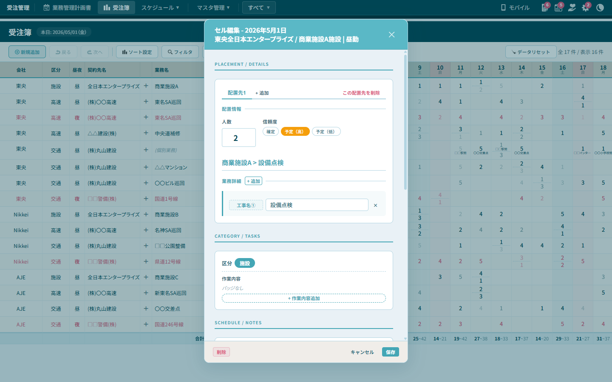
- ヘッダー: 契約先／業務名・会社・区分・シフトを表示
- Placement / Details: 配置先ナビ、人数、信頼度（確定／予定（高）／予定（低））、自動生成される業務名、業務詳細サブタスク
- Category / Tasks: 区分（読み取り専用）、作業内容バッジ（削除・戻す対応）
- Schedule / Notes: 開始/終了時間（時間ピッカー）、現場監督・連絡先（過去候補から選択・戻す対応）、集合場所・集合時間、地図（複数URL・プレビュー）、備考
- フッター: 削除／キャンセル／保存
行情報編集モーダル
行の基本情報を編集
固定列（会社・区分・昼夜・契約先名・業務名）をクリックすると開きます。
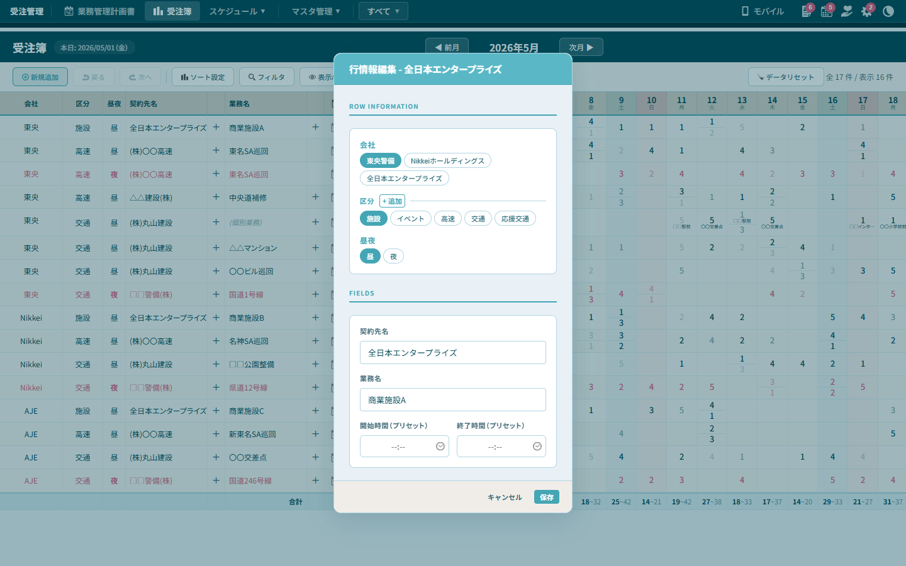
- Row Information: 会社・区分・昼夜をチップで選択（区分はカスタム追加可）。過去データから入力アコーディオン
- Fields: 契約先名（略称↔正式名変換対応）、業務名（空欄なら個別業務）、プリセット開始/終了時間
- 重複警告: 同一条件の行が既にある場合に警告表示
- フッター: キャンセル／保存
カレンダー入力モーダル
1行をカレンダー形式でまとめて入力
固定列のカレンダーボタンをクリックすると開きます。月全体の配置を俯瞰しながら編集できます。
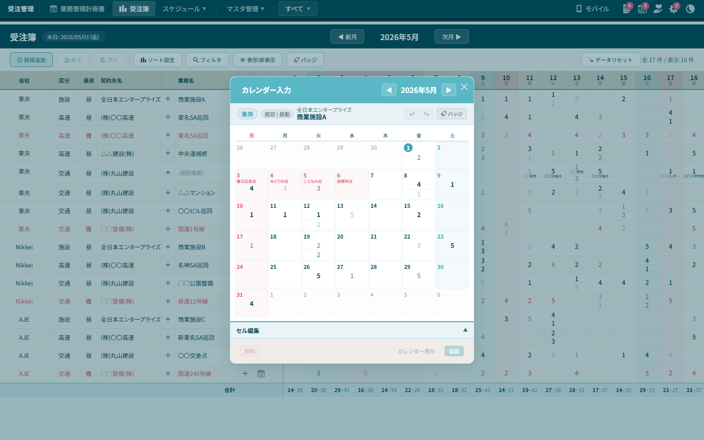
- カレンダーグリッド: 月表示。日をクリックすると下部の編集パネルが展開
- 編集パネル: セル編集モーダルと同等の入力フォームをアコーディオンで内蔵
- 情報バー: メタ情報、Undo/Redo、バッジ表示切替
ソート設定モーダル
行の並び順設定
ツールバーの「ソート設定」ボタンで開きます。
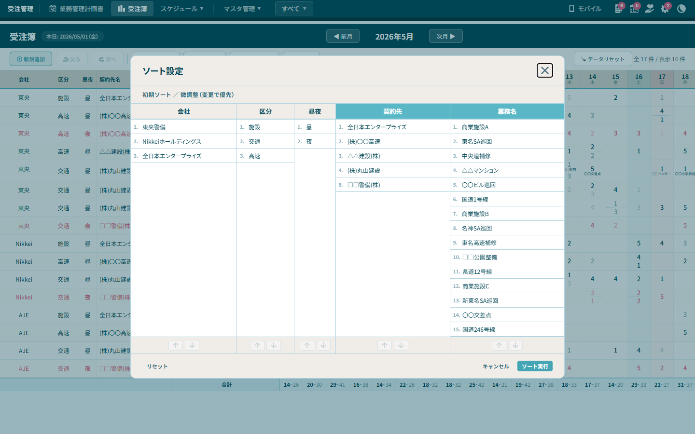
- ソートキー: 会社・区分・昼夜・契約先・業務名の5キー
- 優先順位: 各カラムの上へ/下へで優先順位を変更。契約先・業務名は「優先適用中」バッジ対応
- フッター: リセット／キャンセル／ソート実行
週間予定表（現場配置表） - メイン画面
1週間分の「現場 × 昼/夜」セルに社員・車両・協力業者を配置する画面。画面上部のタイトルは「現場配置表」です。
現場軸グリッド
現場を行、日付×昼/夜を列として配置を一覧します。
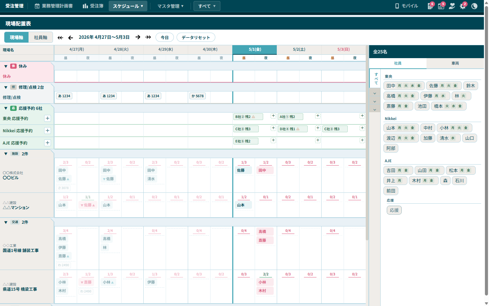
- 軸切替: 「現場軸」「社員軸」で表の向きを切替
- 週ナビ: 前週/前日/翌日/翌週、今日ボタン、データリセット
- 配置セル: 上部に「配置数/受注数」インジケーター（OK=緑・不足=赤・超過=橙）、社員チップ（連続シフト矢印・×削除）、車両チップ（ナンバー）
- 固定行: 「休み」行（休暇申請から導出）、「修理/点検」行（車両整備）、「応援予約」行（グループ会社別の協力業者予約）
- 応援予約行: 各GC（東央／Nikkei／AJE）の予約をセルにバッジ表示（例: B社② 残2）。行左/セルの「＋」から予約を追加
- 右サイドバー: 「社員」「車両」「現場」タブ。会社別アコーディオンの社員/車両をセルへドラッグして配置
- ドラッグ演出: ドラッグ中は対象列だけが強調表示され、配置可能箇所が分かりやすくなります
社員軸ビュー
社員ごとの週間予定
「社員軸」ボタンで切替。社員を行、日付×昼/夜を列として、各社員が入る現場を表示します。
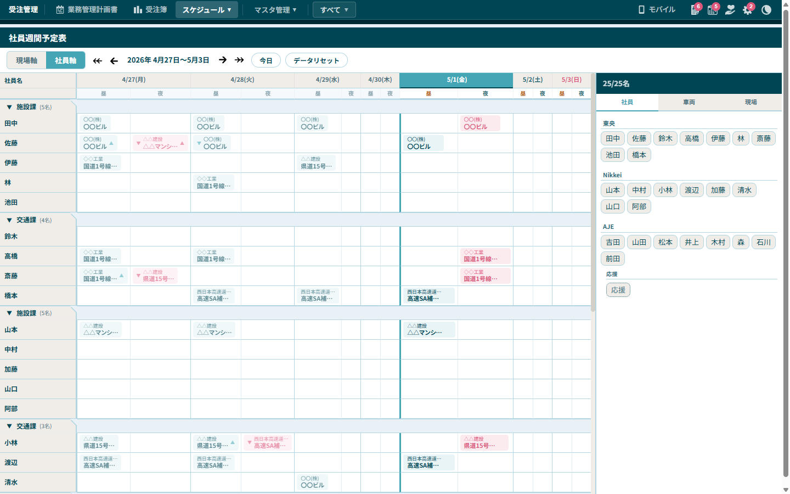
- 社員行: 課ごとにグループ化された社員。各セルに配置先の現場名を表示
- 連続勤務: 昼→夜などの連続勤務を矢印で表示
- 用途: 一人ひとりの稼働を確認し、偏りや連勤をチェック
応援予約（単日）モーダル
その日の協力業者予約を追加
応援予約行のセルの「＋」をクリックすると開きます。
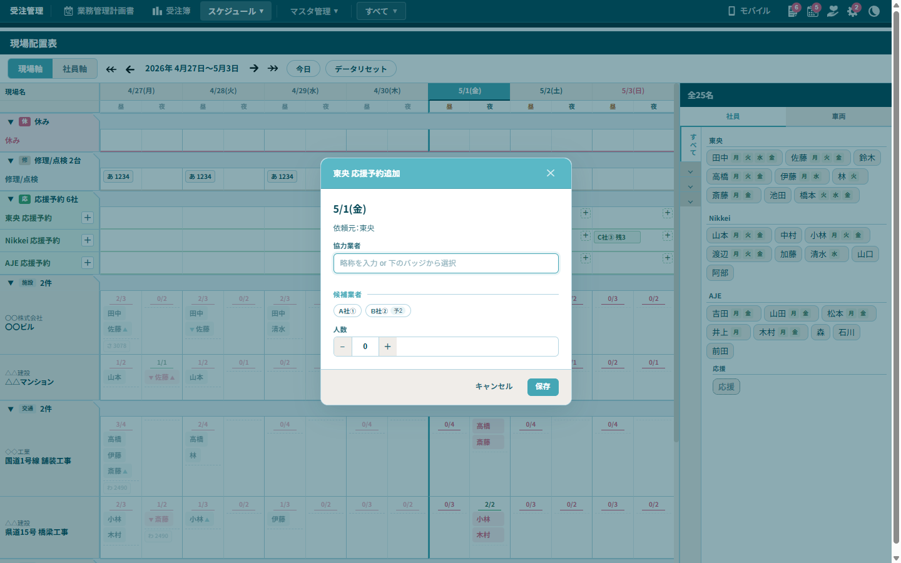
- 日付・依頼元: 対象日とグループ会社を表示
- 協力業者: テキスト入力 or 候補バッジから選択。マスタ未登録の業者は警告アイコン付きで新規登録可
- 人数: ステッパーで予約人数を設定（配置済み人数を下限とする）
- フッター: キャンセル／保存
応援予約（週全体）モーダル
1週間分の予約をまとめて編集
応援予約行の左端の「＋」をクリックすると開きます。
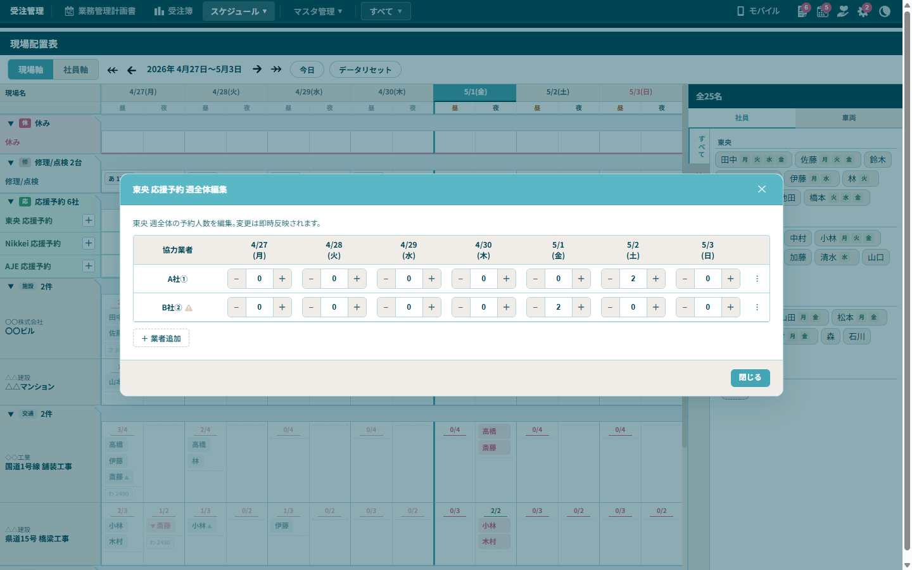
- 協力業者 × 日付マトリクス: 業者ごとに7日分の予約人数をステッパーで編集（変更は即時反映）
- 業者マスタ警告: マスタ未完備の業者に警告アイコン
- 行メニュー（⋮）: この週の予約をクリア／マスタから削除
- + 業者追加: オートコンプリートで業者を追加登録
- フッター: 閉じる
休暇申請管理 - メイン画面
月間カレンダーに社員の休暇バッジをドラッグ&ドロップで配置し、申請→承認→週間予定表連携までを管理します。
月間カレンダービュー
本人／DCP／管理の3ロールで操作権限が切り替わります。
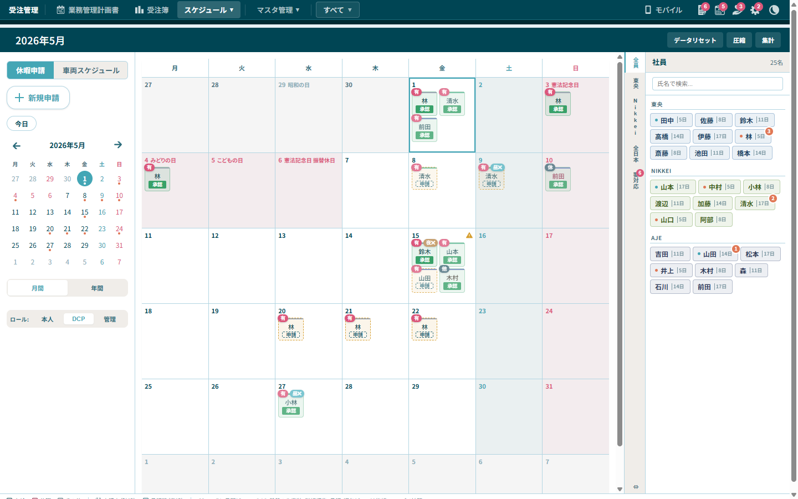
- モード切替: 「休暇申請」「車両スケジュール」を左サイドで切替
- 左サイド: 新規申請、今日、ミニカレンダー、ビュー切替（月間／年間）、ロール切替（本人／DCP／管理）
- ヘッダー: データリセット、圧縮（イニシャル表示）、集計（月次集計モーダル）
- 休暇バッジ: 種別色（有給／休暇／その他）、枠線でステータス表現（破線=申請中・実線=承認済・淡色=却下）、区分チップ（午前休/午後休）。クリックで編集ポップオーバー、ドラッグで日付変更
- 祝日・土日: 祝日名・土日色を表示
- 右サイドバー: 社員リスト（全員／会社別／要対応タブ）。社員カードに有給残・未承認件数。カードをカレンダーへドラッグで新規申請
- 要対応タブ: 未承認の申請、週間予定との衝突（WS衝突）を一覧
申請編集ポップオーバー
休暇申請の詳細編集・承認
カレンダー上の休暇バッジをクリックすると開きます。
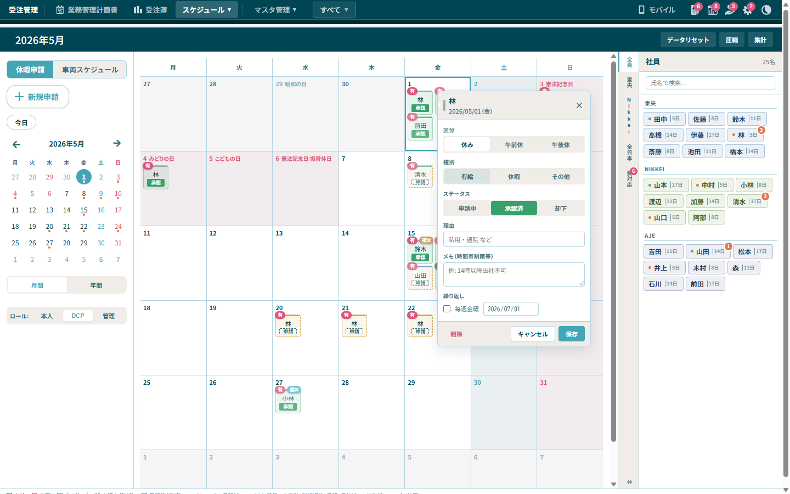
- 区分: 休み／午前休／午後休
- 種別: 有給／休暇／その他
- ステータス: 申請中／承認済／却下（承認権限のあるロールのみ操作可）
- 理由・メモ: テキスト入力
- 繰り返し: 「毎週〇曜日」+ 終了日で定期申請を一括展開
- 監査情報: 承認者／却下者と日時を表示
- フッター: 削除／キャンセル／保存（DCP/管理では承認・却下ボタン）
月次集計モーダル
月単位の休暇実績集計・CSV出力
ヘッダーの「集計」ボタンで開きます。
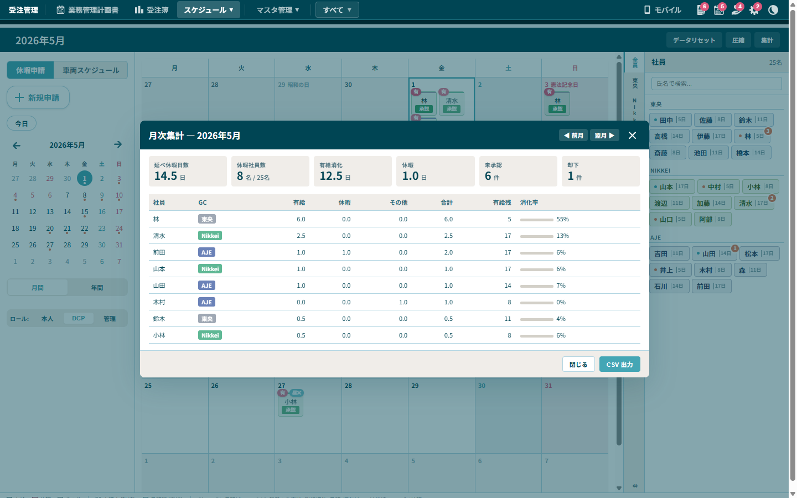
- サマリカード: 延べ休暇日数／休暇社員数／有給消化／休暇／未承認／却下
- 集計テーブル: 社員・GC・有給・休暇・その他・合計・有給残・消化率
- 前月/翌月: ナビボタンで対象月を切替
- CSV出力: UTF-8（BOM付き）でダウンロード
年間ビュー
1年間の休暇傾向をヒートマップ表示
左サイドのビュー切替で「年間」を選択します。
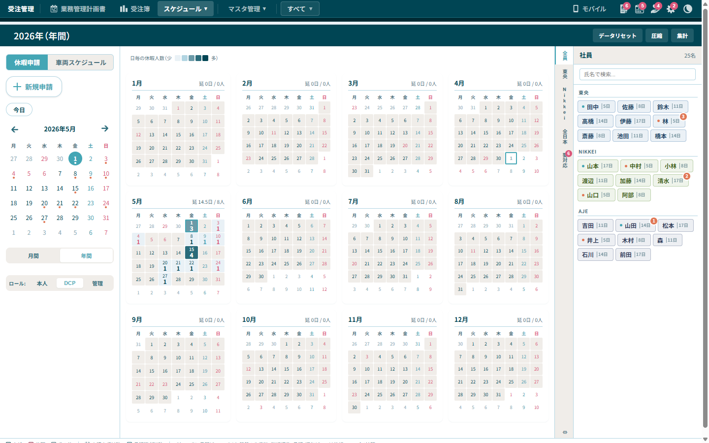
- 12カ月ミニカレンダー: 各日の休暇人数に応じた濃淡（ヒートマップ）
- ツールチップ: セルホバーで日付・祝日名・休暇者リストを表示
- 月クリック: 該当月の月間ビューへ遷移
車両スケジュールモード
車両の整備予定をカレンダー管理
左サイドの「車両スケジュール」で切替。休暇と同じカレンダーUIで車両整備を管理します。
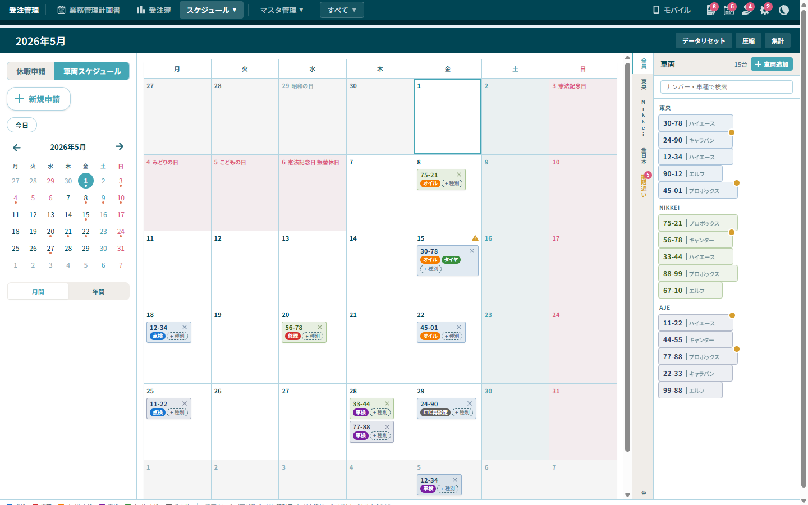
- 整備バッジ: 車両ナンバー + 種別（点検／修理／オイル／車検／タイヤ／ETC再設定 等）
- 右サイドバー: 車両リスト（全車／会社別／期限近いタブ）、車両追加ボタン。車両をカレンダーへドラッグして種別を選択
- 期限近いタブ: 車検・点検期限が30日以内の車両を一覧
Quick Access - ログイン画面
現場担当者がスマートフォンから受注をすばやく入力するためのモバイル向け画面です。
ログイン
メールアドレス・パスワードで認証します（デモは入力済み）。
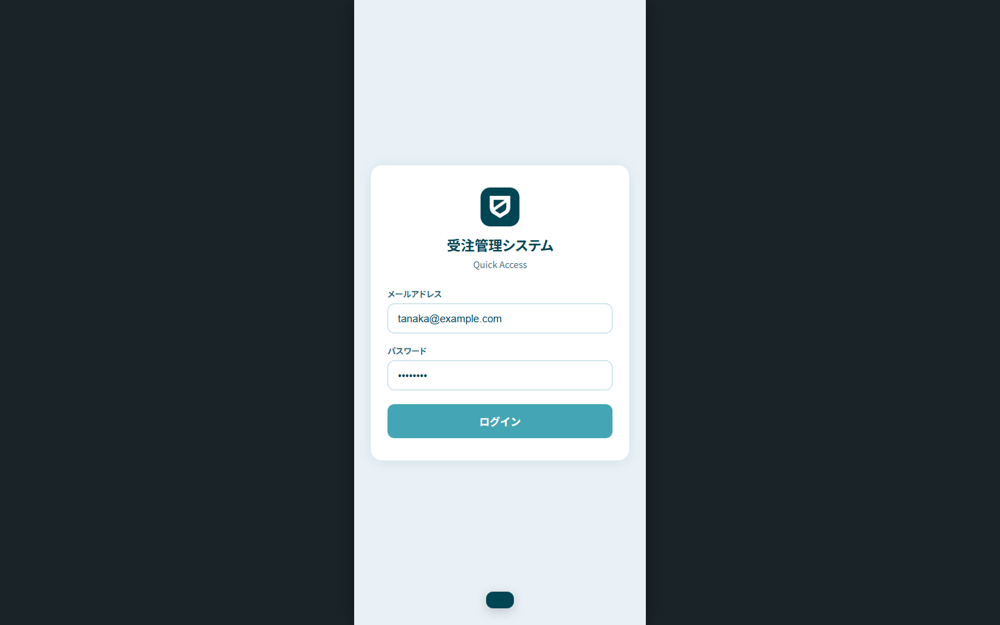
- メールアドレス / パスワード: 入力してログイン
- レイアウト: スマートフォン画面を想定したモバイルUI
ホーム（契約先・現場一覧）
契約先カードと現場リスト
ログイン後のホーム画面。契約先を選んで現場のカレンダーへ進みます。
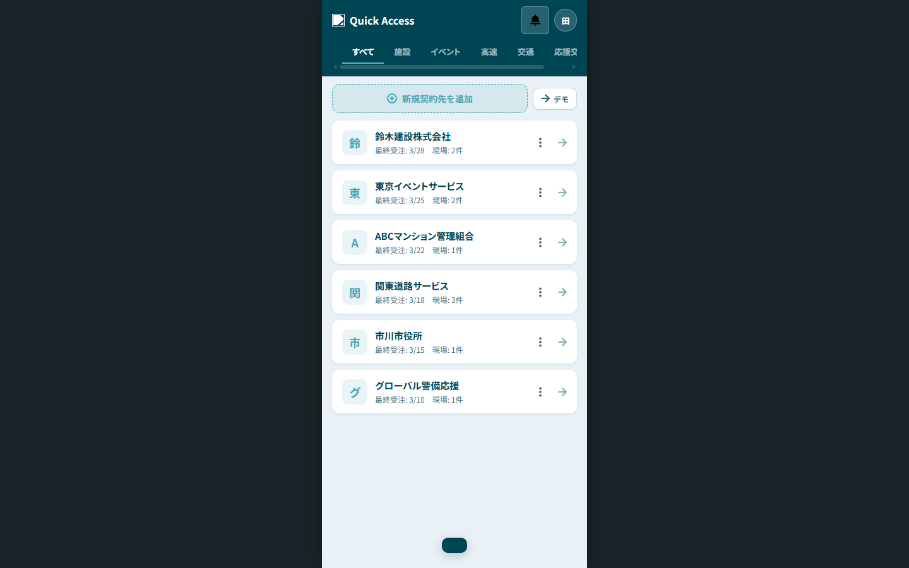
- ヘッダー: 通知ベル、アカウントメニュー（ユーザー情報・ログアウト）
- カテゴリタブ: すべて／施設／イベント／高速／交通／応援交通／非表示
- 新規契約先を追加: 契約先名を入力して登録
- 契約先カード: 最終受注日・現場件数を表示。展開で現場リスト。⋮メニューから修正・非表示
- 現場: クリックでカレンダー入力画面へ。⋮メニューから修正・削除/非表示、行から新規現場追加
カレンダー入力画面
日付選択と受注入力パネル
現場を選ぶと開きます。日付をタップして下部の編集パネルで入力します。
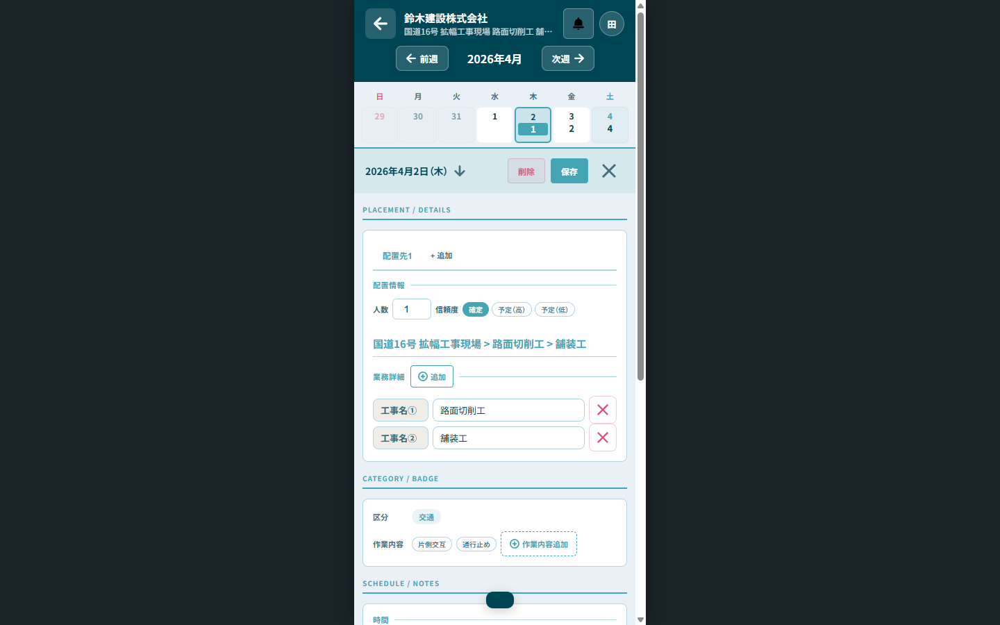
- ヘッダー: 戻る、現場名、前週/次週、月表示
- カレンダー: 日付セルに人数を表示。タップで週表示+編集パネル展開
- PLACEMENT / DETAILS: 配置先タブ（+追加）、人数、信頼度、自動生成の業務名、業務詳細
- CATEGORY / BADGE: 区分、作業内容バッジ
- SCHEDULE / NOTES: 時間、現場監督・連絡先、集合、地図、備考
- 保存/削除: ヘッダーの保存で確定（トースト表示）、削除で配置削除
現場情報モーダル
現場の新規追加・編集
「新規現場を追加」行、または現場⋮メニューの「修正」で開きます。
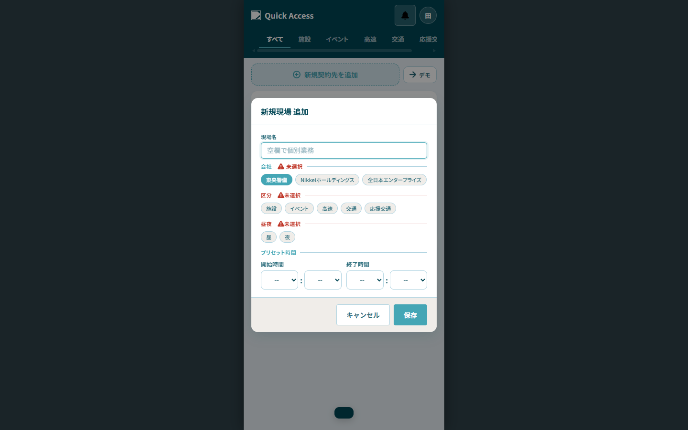
- 現場名: 空欄なら「個別業務」
- 会社・区分・昼夜: チップで選択。未選択時は警告アイコン表示
- プリセット時間: 開始/終了時間の初期値を設定
- フッター: キャンセル／保存
変更通知システム - 通知ベル（4分類）
全画面共通のナビバー右上に表示される通知ベル群。受注・配置・申請・マスタの各変更がリアルタイムに集約され、未読件数がバッジ表示されます。
4分類のベル
ドメインごとに独立したベルを持ち、それぞれ未読数を表示します。
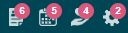
- 受注・業務変更: 受注簿（OB）／Quick Access での受注行の追加・変更・削除
- 配置・予定変更: 業務管理計画書（SL）／週間予定表（WS）／車両予定での社員・車両・応援・予定の配置変更
- 申請・承認: 休暇申請（LA）の新規・承認・却下・修正
- マスタ・システム: 社員・現場・契約先などマスタの変更やシステムイベント
通知パネル（最新タブ）
ベルをクリックして通知一覧を表示
「最新」「履歴」の2タブ構成。最新タブは日付ごとにグループ化されます。
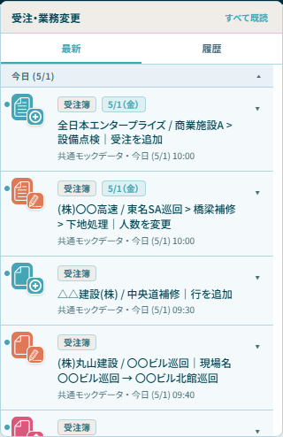
- ヘッダー: 「〇〇の変更通知」タイトルと「すべて既読」ボタン
- 通知アイテム: 種別アイコン（追加/変更/削除）、発信元バッジ（受注簿など）、日付バッジ、変更内容、操作者・時刻
- 未読表示: 未読は左に水玉マーク。「すべて既読」で一括既読化しバッジを0に
- 展開: 差分やクロス画面ヒントがあるアイテムは右端のシェブロン（▾）で展開
アイテム展開・別画面ジャンプ
クロス画面ヒントと「〇〇で開く」
通知が現在の画面で直接表示できない場合、関連画面へのジャンプボタンが展開されます。
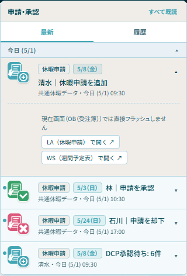
- 状態アイコン: 追加（＋）・承認（✓）・却下（✗）・件数集計など、操作種別ごとにアイコンが変化
- クロス画面ヒント: 「現在画面では直接フラッシュしません」とともに「LA（休暇申請）で開く ↗」「WS（週間予定表）で開く ↗」等のボタンを表示
- 別画面遷移: ボタンを押すと同じタブで対象画面に遷移し、着地後に対象箇所をスポットライトで強調
履歴タブ
過去の変更を軸別に検索
パネル上部の「履歴」タブで表示します。
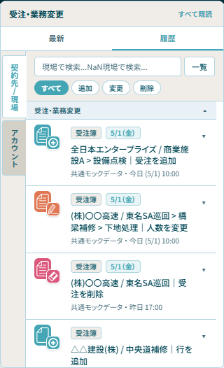
- 軸切替: 「契約先/現場」軸と「アカウント（操作者）」軸でグループ化を切替
- 検索: キーワード検索ボックスと一覧ピッカー
- フィルタチップ: すべて／追加／変更／削除で絞り込み
- グループ: 軸ごとのアコーディオンで過去の変更を整理表示
ジャンプ着地スポットライト
通知クリックで対象箇所を強調
通知アイテムをクリックすると、画面全体を暗転させ対象の行/セルだけを明るく残すスポットライト演出が表示されます（約2秒でフェード）。
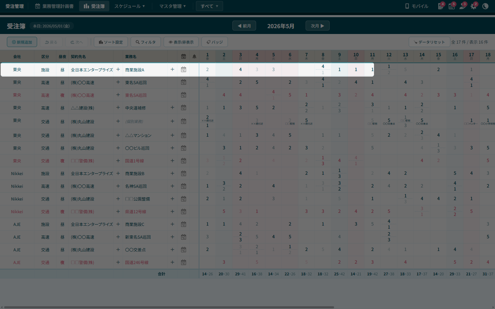
- 全画面スポットライト: 透明な穴 + 外向きの影で周囲を暗くし、変更対象を一目で把握
- 同一画面: 対象がその画面にあればその場でスポットライト表示
- 別画面: 対象が別画面なら同タブで遷移し、着地後に自動でスポットライト表示
- 即解除: フェード途中で画面をクリックすると即座に解除
ER図（テーブル相関図）
システムのデータベース構造を表すER図。er-diagram.html で拡大・パン操作ができます（DB設計書 03_データベース設計.md と同期）。
33テーブルの相関
マスタ／トランザクション／関連／ログの4分類で色分け表示。各テーブルの列・主キー(PK)・外部キー(FK)を示します。
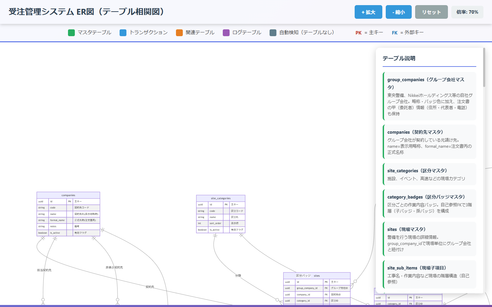
- マスタ: group_companies（グループ会社）、companies（契約先）、site_categories／category_badges（区分・作業内容）、sites／site_sub_items（現場）、organization_units／org_level_types（組織）、employees（社員）、vehicles／etc_cards（車両・ETC）、holidays（祝日）、support_partners（協力業者）ほか
- トランザクション: daily_site_orders（日毎受注）、daily_assignments／assignment_details（配置）、maintenance_schedules（整備）、leave_requests（休暇申請）、support_reservations／support_assignments（応援予約・配置）、intergroup_billings（グループ間請求）、purchase_orders ほか
- ログ: order_change_history／change_history（変更履歴）、notification_logs（通知ログ。domain/scope/op/targets/affects/diffs を保持）
- 操作: 右上の「+拡大／-縮小／リセット」、マウスホイールでズーム、ドラッグでパン。右側「テーブル説明」パネルで各テーブルの役割を確認